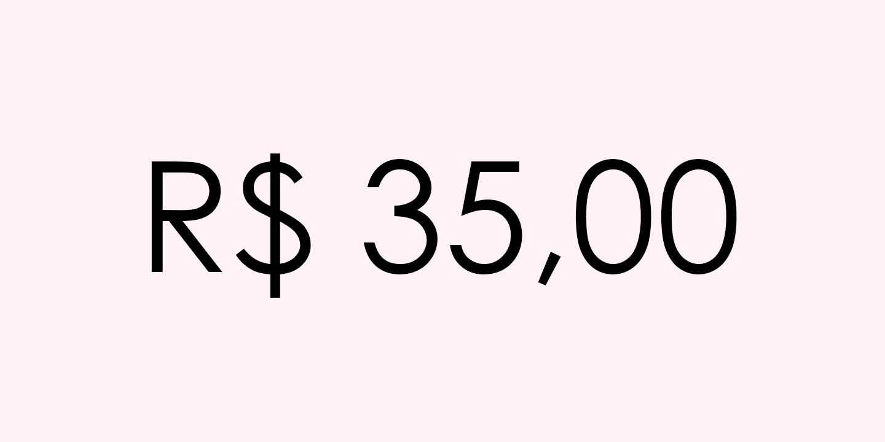
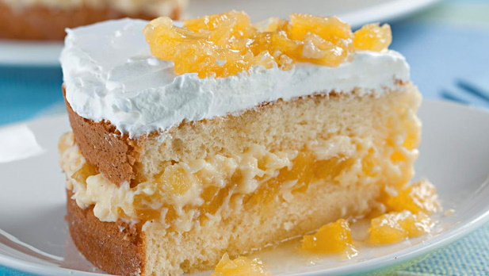
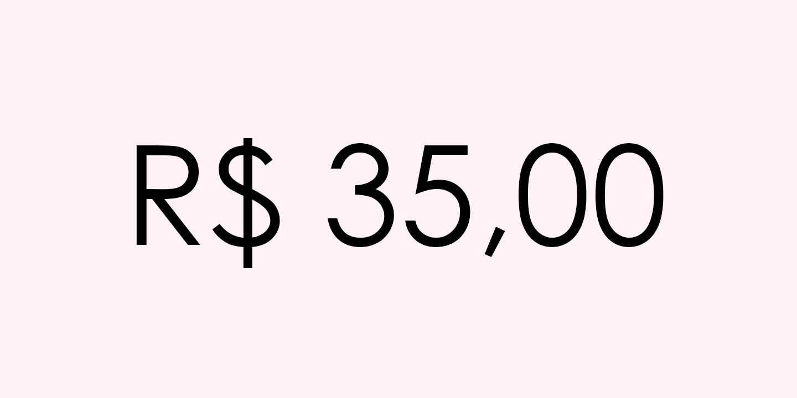

|  |
|

|
| ◄ | ► |
| Além de fonte antioxidante, anti-inflamatória e fibras, o pêssego é a combinação perfeita para um bolo magnífico que você pode postar em cheio! Tem um gosto encantador tanto na massa quanto no recheio e cobertura! |